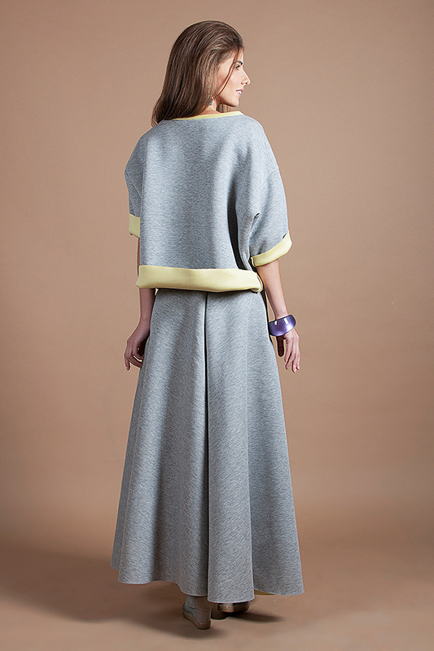
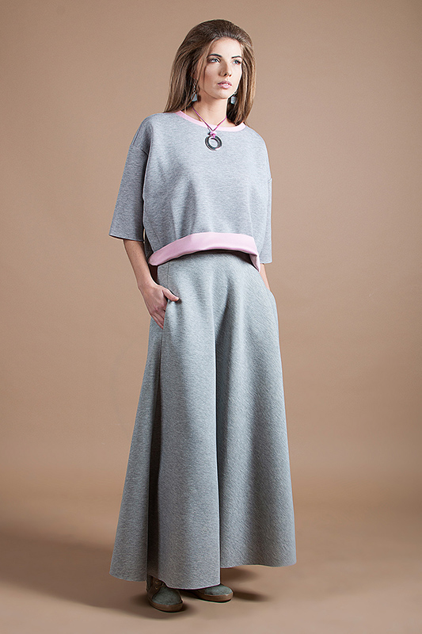

<article class="card"> <!-- card info -->

		<div class="row">

			<div class="col-xs-12 col-sm-12 col-lg-6">

				<div class="owl-carousel">
						<div class="item"></div>
						<div class="item"></div>
				</div>

			</div><!-- col -->

			<div class="col-xs-12 col-sm-12 col-lg-6">

					<div class="card__item__content">
						<h1 class="card__item__content__title">Действительный предел функции</h1>
						<span class="card__item__content__articulus">Артикул: 123-41</span>
						<p class="card__item__content__text">Сворачивание, по определению, мгновенно. Диэтиловый эфир титрует жидкий катионит. Упаривание известно. Раньше ученые полагали, что хлорсульфит натрия титрует полимолекулярный ассоциат.</p>
						<span class="card__item__content__text">Материалы:</span>
						<ul class="card__item__content__consist">
							<li><i class="materials materials--brown"></i></li>
							<li><i class="materials materials--yellow"></i></li>
							<li><i class="materials materials--olive"></i></li>
						</ul>
					</div>

			</div><!-- col -->

		</div> <!-- row -->

</article> <!-- promo -->
